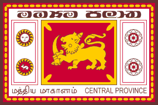

Home
Most Visited Places
Booking Application Details
Booking Application Form
Search Booking Application Details
Contact Us
Srilankan Provinces
Sri Lanka From ancient times Sri Lanka has been an attractive tourism region. its known as the Pearl of the Indian Ocean because of its location in the Indian `` Ocean and attractive coastline. In ancient times sri lnka was known as cylon. Sri Lanka has a zone of 65610 square km with 1585 km coastline. Because sri lanka close to the equator its has a hot and wet climate. There are many palm-studded beaches and has a hot wet climate of average temperature of 20-30 c degrees. The main tourist’s attraction In Sri Lanka, provinces are the first level administrative division. They were first established by the British rulers of Ceylon in 1833. Over the next century most of the administrative functions were transferred to the districts, the second level administrative division. By the middle of the 20th century the provinces had become merely ceremonial. This changed in 1987 when, following several decades of increasing demand for a decentralization, the 13th Amendment to the 1978 Constitution of Sri Lanka established provincial councils.Currently there are nine provinces.
Central Province

Located right in the heart of the country, Central Province is mostly mountainous, with hills, rainforests, and wet-zones found among the hills. Due to its topography and wonderful scenery, the Central Highlands are a great place to go hiking. The Knuckles Mountain Range and Horton Plains National Park are particularly popular destinations, while the sparkling Devon Falls are also well worth checking out. Culture too is on offer, and the city of Kandy is full of amazing historical and cultural landmarks, with the Temple of the Tooth and the Royal Palace among its most impressive sights. Nuwara Eliya is known as ‘Little England’ due to its Victorian architecture and scenic setting amid endless tea plantations. In addition to its fabulous natural sights and rich cultural heritage, Central Province is also awash with history. The centuries-old Dambulla cave temple and the Ancient City of Sigirya are both fascinating to explore, with the latter boasting a stunning red stone fortress and palace.
Visit Here This Tourism Places
Northern Province
For so long plagued by war, much of Sri Lanka’s Northern Province still exhibits the scars. Bullet-riddled and bombed-out buildings dot its cities, while land mines still lie hidden within its disarmingly beautiful and peaceful jungles. Due to the many gorgeous beaches, sparkling lagoons, and tropical forests, not to mention its temples, forts, and rich cultural heritage, the Tamil-dominated Northern Province is slowly opening up to tourists. Now that it’s safe again, there are a plethora of great sights worth checking out. While its stunning scenery is what many people come for, both Jaffna – the main city in the region – and Mannar, which is located near Adam’s Bridge, are definitely worth a visit; they are both home to lots of interesting historical sights, and proudly showcase Tamil’s rich culture and customs. In addition to this, the beautiful islands of Velanai and Neduntheevu are delightful to explore, with lots of idyllic beaches.
Visit Here This Tourism Places
North Central Province
Home to two of Sri Lanka’s most ancient kingdoms, North Central Province remarkably boasts over 2,500 years of history, and it is not without reason that it is known as the cultural triangle. Anuradhapura and Polonnaruwa are both incredible places to visit. The two cities are bursting with impressive archaeological sites, with awe-inspiring ruins of palaces and temples almost everywhere you look. Among the many must-see sights are the Bodhi Tree Temple in Anuradhapura and the King Parakramabahu I Statue in Polonnaruwa. Although its wealth of historic sights justifiably dominates most visitors’ itineraries, the province also has lots of lovely nature and wildlife for you to enjoy. Kaudulla and Minneriya National Parks both being home to Sri Lanka’s majestic elephants who roam happily among the spectacular scenery. Seeing these magnificent animals in their natural habitat is an unforgettable experience.
<
Visit Here This Tourism Places
Sabaragamuwa Province
Renowned for the glittering gems that come from its lands, Sabaragamuwa, in the southwest of Sri Lanka, is often overlooked by visitors to the country; this makes it perfect for people looking to immerse themselves in the local culture and traditions. While it may not boast a beautiful coastline or fascinating historical sights, Sabaragamuwa has more than enough to keep you entertained. Sinharaja Forest Reserve and Udawalawe National Park are two gorgeous parts of the country for you to explore, with lots of impressive wildlife and breathtaking waterfalls to discover. Ratnapura – meaning ‘City of Gems’ – is the capital of the region. The bustling market town boasts some interesting temples for you to visit, while lots of people also come to gaze upon the alluring gems in any one of its showrooms. In addition to this, it is also a great base from which to go trekking, with towering Adam’s Peak being a top-rated destination.
Visit Here This Tourism Places
Southern Province
Covering the southern coast of Sri Lanka, the Southern Province is famous for its wonderful beaches. While each appears more beautiful than the last, those at Hikkaduwa and Unawatuna are particularly delightful. The golden shores and sparkling sea offer a myriad of watersports, such as swimming, snorkeling, and surfing. The historic city of Galle is equally enchanting. Stop by for a wander around its fascinating colonial-era sights and get lost in the history. Matara and Tissamaharama are also great locations with delightfully scenic settings. Away from its stunning coastline, the province also boasts Yala National Park – the most visited in the country. Here, you’ll find a wide variety of plant life, as well as a host of fascinating animals, such as elephants, leopards, monkeys, and crocodiles. A safari trip to this park is a bucket list affair; nature lovers will find no better place in the country to fulfill their wildlife-spotting desires.
Visit Here This Tourism Places
Eastern Province
Covering almost the entire eastern coast of Sri Lanka, this beautiful part of the country is home to some of the nation’s best beaches, with those at Nilaveli, Passikudah, and Uppuveli among the most popular. Due to its long and scenic coastline, the Eastern Province is a great place to head if you love watersports, with Arugam Bay renowned for its wealth of great surf spots. As the surrounding area is full of swamps and forests that are home to a stunning array of wildlife, Arugam Bay also makes for a great base if you want to explore the south of the region, as Kumana National Park also lies nearby. Further to the north are the cities of Batticaloa and Trincomalee, which are both located in absolutely gorgeous settings alongside the ocean. Full of historical sights – such as Batticaloa Fort and Fort Frederick – they are both well worth a visit for their lovely beaches and rich cultural heritage. If you’re keen to get a glimpse of the abundant marine life, you can also go snorkeling or whale watching offshore.
Visit Here This Tourism Places
North Western Province
Bordering the Gulf of Mannar, the North Western Province has a bit of everything for you to enjoy. Glorious golden beaches can be found alongside colonial-era historical landmarks and astounding archaeological sites that showcase a vast array of impressive ruins. It really is a wonderful part of the country to explore; history lovers, in particular, will revel in the ancient rock temples at Kurunegala and Wayamba, which exhibit exquisite frescoes and centuries-old sculptures. As the province was once home to four of Sri Lanka’s medieval kingdoms, the archaeological sites of Dambadeniya, Kurunegala, Panduwasnuwara, and Yapahuwa are also fascinating to explore; they house incredible ruins of citadels, palaces, temples, and more. While the Dutch Fort at Kalpitiya is also worth checking out, the other main draw in the North Western Province is its divine coastline, which is riddled with beautiful beaches and charming fishing villages; those at Marawila, Talwila, and Waikkal are among the very best.
Visit Here This Tourism Places
Western Province
The most densely populated province in the country, the Western Province is home to both Sri Jayawardenepura Kotte – the capital of Sri Lanka – and Colombo – the commercial center and largest city on the island. While much of its consists of urban areas and satellite towns, the province does have some gorgeous coastline for you to explore. Negombo’s beautiful beaches, fascinating canal network, and colonial-era landmarks make it one of the most popular tourist destinations in the area. While the capital Sri Jayawardenepura Kotte doesn’t have that much in the way of sights, Colombo is well worth visiting for its multitude of temples and museums, with lots of interesting historical sights thrown-in for good measure.
Visit Here This Tourism Places
Uva Province
Nestled away in the southeast of the country, Uva is mostly mountainous. The Haputale and Namunukula ranges run through it, with various rivers and reservoirs also dotted about its landscape. As such, the highlands make for a lovely getaway if you’re looking to escape from Sri Lanka’s sun-kissed coast. Among all the tea plantations that blanket the mountainsides, you can find picturesque towns such as Badulla and Ella, both of which are located in very romantic settings. Due to the fact that a plethora of sparkling waterfalls are hidden away among the province’s stunning scenery, Uva is also a popular place to go trekking in the hills and plantations. Maduru Oya and Udawalawe national parks have lots of amazing wildlife to discover, with the former also home to the Veddas tribes. Visiting the aboriginal people’s villages offers a fascinating look at their rich culture and heritage.
Visit Here This Tourism Places